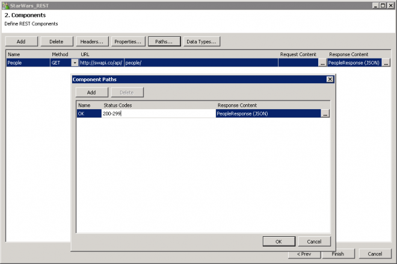
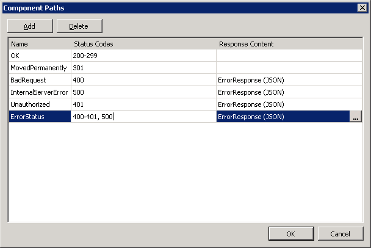
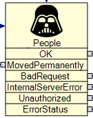

In this Article I will explain how to use the REST Generator (PATHs) within Workflow 7.6.
Follow up articles
- Workflow - REST Generator
- Using the REST Generator in Workflow 7.6
- Using the REST Generator (GET) in Workflow 7.6 with Mobility Suite
- Using the REST Generator (Headers) in Workflow 7.6 with Mobility Suite
- Using the REST Generator (POST) in Workflow 7.6 with Mobility Suite
- Using the REST Generator (Response Content) in Workflow 7.6
- Using the REST Generator (PATHs) in Workflow 7.6
- Workflow - Read Write JSON
- Workflow - REST - Response Header
New to me in build Symantec.Workflow.Setup.7.6.4383.504 (think it was .479 but I'd advise getting the last build) the REST Generator has been updated to allow multiple paths from the response content.
This is a great addition as what if your request fails or returns a StatusCode other than 200, this needs to be handled differently, you won't get the same data type returned,
By default this creates a PATH of 200-299. As of writing there is no way to delete this path, which I believe is incorrect, what about a PUT request that returns a 301.
The 200-299 PATH requires an output type, if none is selected you get the following error:
"Error validating info - ResponseContent on component x"
If you don't need one you could just set it to text, it's never going to go down that path, so just have a demo component going to end?
Let's use our trusty Star Wars API to see it in action:
Fill in the usual content and get the Response Content using "Create the Request" option.
Now click on "Paths..." to see the new path.

You can create multiple paths, make sure OK has a Response, this defaults to your response from the previous screen.
You could have individual ones or you can comma separate them if they return the same data type,

I would advise either a path for each OR a range for the same, don't have both, it is likely to pick the first code it matches.
For the Name don't put spaces, or you get the following error

It would be nice if the Generator warned you about this when creating a new Path name, as this is when you compile and don't know this is the reason.
Then back in Workflow we have the component with all the Paths,

You have the data available to you given the chosen path, and you can deal with it accordingly,
Ideas
Other articles
- Using the REST Generator in Workflow 7.6
- Using the REST Generator (GET) in Workflow 7.6 with Mobility Suite
- Using the REST Generator (Headers) in Workflow 7.6 with Mobility Suite
- Using the REST Generator (POST) in Workflow 7.6 with Mobility Suite
- Using the REST Generator (Response Content) in Workflow 7.6